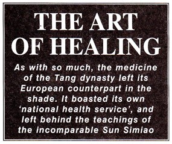

<!-- 원본: ACADEMIC7/reading (레거시 서버에서 2026-11-14 수집, 정답 제거) -->
<div class="legacy-content"><div id="pageContainer">
<div class="page" id="page-0">
<div class="flex flex-col md:flex-row gap-6">
<div class="w-full md:w-1/2 max-h-[600px] overflow-y-auto">
<h3 class="text-xl font-semibold text-purple-800 mb-4">You should spend about 20 minutes
                                    on <b>Questions 1 - 14,</b> which are based on
                                    Reading
                                    Passage 1 below.
                                </h3>
<div class="text-gray-700 leading-relaxed">
<div style="width:800px; border:1px solid #bbb; padding:20px;">
<center><b style="font-size:55px; color:#000; font-family: 'Times New Roman', Times, serif;">Twist
                                                in the Tale</b>
</center>
<br/>
<div>
<div style="width:200px">
<b>Fears that television and computers would kill children's desire to
                                                    read couldn't have been more wrong.<br/>
                                                    With sales roaring, a new generation of authors are publishing's
                                                    newest and unlikeliest literary stars.
                                            </b></div>
<p>
<b>A</b>  Less than three years ago, doom merchants were
                                                predicting that the growth in
                                                video games and the rise of the Internet would sound the death knell for
                                                children's literature. But contrary to popular myth, children are
                                                reading more
                                                books than ever. A recent survey by Books Marketing found that children
                                                up to
                                                the age of 11 read on average for four hours a week, particularly girls.
                                            </p>
<br/>
<div style="height:10px;"></div>
<p>
<b>B</b>  Moreover, the children's book market, which
                                                traditionally was seen as a poor
                                                cousin to the more lucrative and successful adult market, has come into
                                                its own.
                                                Publishing houses are now making considerable profits on the back of new
                                                children's books and children's authors can now command significant
                                                advances.
                                                "Children's books are going through an incredibly fertile period," says
                                                Wendy
                                                Cooling, a children's literature consultant. "There's a real buzz around
                                                them.
                                                Book clubs are happening, sales are good, and people are much more
                                                willing to
                                                listen to children's authors."
                                            </p>
<br/>
<div style="height:10px;"></div>
<p>
<b>C</b>  The main growth area has been the market for eight
                                                to fourteen-year-olds, and
                                                there is little doubt that the boom has been fuelled by the bespectacled
                                                apprentice, Harry Potter. So influential has J. K. Rowling's series of
                                                books
                                                been that they have helped to make reading fashionable for pre-teens.
                                                "Harry
                                                made IT OK to be seen on a bus reading a book," says Cooling. "To a
                                                child, that
                                                is important." The current buzz around the publication of the fourth
                                                Harry
                                                Potter beats anything in the world of adult literature.
                                            </p>
<br/>
<div style="height:10px;"></div>
<p>
<b>D</b>  "People still tell me, 'Children don't read
                                                nowadays'," says David Almond, the
                                                award-winning author of children's books such as Skellig. The truth is
                                                that they
                                                are skilled, creative readers. When I do classroom visits, they ask me
                                                very
                                                sophisticated questions about use of language, story structure, chapters
                                                and
                                                dialogue." No one is denying that books are competing with other forms
                                                of
                                                entertainment for children's attention but it seems as though children
                                                find a
                                                special kind of mental nourishment within the printed page.
                                            </p>
<br/>
<div style="height:10px;"></div>
<p>
<b>E</b>  "A few years ago, publishers lost confidence and
                                                wanted to make books more like
                                                television, the medium that frightened them most," says children's book
                                                critic
                                                Julia Eccleshare. "But books aren't TV, and you will find that children
                                                always
                                                say that the good thing about books is that you can see them in your
                                                head.
                                                Children are demanding readers," she says. "If they don't get it in two
                                                pages,
                                                they'll drop it."
                                            </p>
<br/>
<div style="height:10px;"></div>
<p>
<b>F</b>  No more are children's authors considered mere
                                                sentimentalists or failed adult
                                                writers. "Some feted adult writers would kill for the sales," says
                                                Almond, who
                                                sold 42,392 copies of Skellig in 1999 alone. And advances seem to be
                                                growing
                                                too: UK publishing outfit Orion recently negotiated a six-figure sum
                                                from US
                                                company Scholastic for The Seeing Stone, a children's novel by Kevin
                                                Crossley-Holland, the majority of which go to the author.
                                            </p>
<br/>
<div style="height:10px;"></div>
<p>
<b>G</b>  It helps that once smitten, children are loyal and
                                                even fanatical consumers.
                                                Author Jacqueline Wilson says that children spread news of her books
                                                like a
                                                bushfire. "My average reader is a girl of ten," she explains. "They're
                                                sociable
                                                and acquisitive. They collect. They have parties — where books are a
                                                good
                                                present. If they like something, they have to pass it on." After
                                                Rowling, Wilson
                                                is currently the best-selling children's writer, and her sales have
                                                boomed over
                                                the past three years. She has sold more than three million books, but
                                                remains
                                                virtually invisible to adults, although most ten-year-old girls know
                                                about her.
                                            </p>
<br/>
<div style="height:10px;"></div>
<p>
<b>H</b>  Children's books are surprisingly relevant to
                                                contemporary life. Provided they
                                                are handled with care, few topics are considered off-limits for
                                                children. One
                                                senses that children's writers relish the chance to discuss the whole
                                                area of
                                                topics and language. But Anne Fine, author of many award-winning
                                                children's
                                                books is concerned that the British literati still ignore children's
                                                culture.
                                                "It's considered worthy but boring," she says.
                                            </p>
<br/>
<div style="height:10px;"></div>
<p>
<b>I</b>  "I think there's still a way to go," says Almond,
                                                who wishes that children's
                                                books were taken more seriously as literature. Nonetheless, he derives
                                                great
                                                satisfaction from his child readers. "They have a powerful literary
                                                culture," he
                                                says. "It feels as if you're able to step into the store of mythology
                                                and
                                                ancient stories that run through all societies and encounter the great
                                                themes:
                                                love and loss and death and redemption."
                                            </p>
<br/>
<div style="height:10px;"></div>
<p>
<b>J</b>  At the moment, the race is on to find the next Harry
                                                Potter. The bidding for new
                                                books at Bologna this year — the children's equivalent of the Frankfurt
                                                Book
                                                Fair — was as fierce as anything anyone has ever seen. All of which
                                                bodes well
                                                for the long-term future of the market — and for children's authors, who
                                                have
                                                traditionally suffered the lowest profile in literature, despite the
                                                responsibility of their role.
                                            </p>
</div>
</div>
</div>
</div>
<div class="w-full md:w-1/2 max-h-[600px] overflow-y-auto">
<div class="question mb-6">
<div id="box3nav">
<p><b>QUESTIONS 1 - 7</b></p>
</div>
<br/>
<div>
<p>Look at the following list of people A-E and the list of statements
                                            (Questions
                                            1-7).<br/>
                                            Match each statement with one of the people listed.
                                        </p>
<br/>
<div style="width:600px; border:1px solid #000; padding:10px;">
<b>A</b> Wendy Cooling<br/>
<b>B</b> David Almond<br/>
<b>C</b> Julia Eccleshare<br/>
<b>D</b> Jacqueline Wilson<br/>
<b>E</b> Anne Fine<br/>
</div>
<br/>
<b>1 </b>   Children take pleasure in giving books to each other.<br/>
<input autocomplete="off" name="q1" placeholder="(1)" style="width:150px; border:none; border-bottom:1px solid #000" type="text"/>
<br/>
<div style="height:10px"></div>
<b>2 </b>   Reading in public is an activity that children have not
                                        always felt comfortable about doing.<br/>
<input autocomplete="off" name="q2" placeholder="(2)" style="width:150px; border:none; border-bottom:1px solid #000" type="text"/>
<br/>
<div style="height:10px"></div>
<b>3 </b>   Some well-known writers of adult literature regret that
                                        they earn less than popular children's writers.<br/>
<input autocomplete="off" name="q3" placeholder="(3)" style="width:150px; border:none; border-bottom:1px solid #000" type="text"/>
<br/>
<div style="height:10px"></div>
<b>4 </b>   Children are quick to decide whether they like or
                                        dislike a book<br/>
<input autocomplete="off" name="q4" placeholder="(4)" style="width:150px; border:none; border-bottom:1px solid #000" type="text"/>
<br/>
<div style="height:10px"></div>
<b>5 </b>   Children will read many books by an author that they
                                        like.<br/>
<input autocomplete="off" name="q5" placeholder="(5)" style="width:150px; border:none; border-bottom:1px solid #000" type="text"/>
<br/>
<div style="height:10px"></div>
<b>6 </b>   The public do not realise how much children read
                                        today.<br/>
<input autocomplete="off" name="q6" placeholder="(6)" style="width:150px; border:none; border-bottom:1px solid #000" type="text"/>
<br/>
<div style="height:10px"></div>
<b>7 </b>   We are experiencing a rise in the popularity of
                                        children's literature.<br/>
<input autocomplete="off" name="q7" placeholder="(7)" style="width:150px; border:none; border-bottom:1px solid #000" type="text"/>
</div>
</div>
<div class="question mb-6">
<div id="box3nav">
<p><b>QUESTIONS 8 - 10</b></p>
</div>
<br/>
<div>
<p>Using NO MORE THAN THREE WORDS taken from the reading passage, answer the
                                            following questions.<br/>
</p>
<br/>
                                        Write your answers in boxes 8-10 on your answer sheet.<br/>
<div style="height:10px"></div>
<b>8</b>  For which age group have sales of books risen the most?
                                        <input autocomplete="off" name="q8" placeholder="(8)" style="width:150px; border:none; border-bottom:1px solid #000" type="text"/><br/>
<div style="height:10px"></div>
<b>9</b>  Which company has just invested heavily in an unpublished
                                        children's
                                        book?  
                                        <input autocomplete="off" name="q9" placeholder="(9)" style="width:150px; border:none; border-bottom:1px solid #000" type="text"/><br/>
<div style="height:10px"></div>
<b>10</b>  Who is currently the best-selling children's
                                        writer?  
                                        <input autocomplete="off" name="q10" placeholder="(10)" style="width:150px; border:none; border-bottom:1px solid #000" type="text"/><br/>
</div>
</div>
<div class="question mb-6">
<div id="box3nav">
<p><b>QUESTIONS 11 - 14</b></p>
</div>
<br/>
<div>
<p>
                                            Reading Passage 1 has ten paragraphs <b>A-J.</b><br/>
</p><div style="height:10px"></div>
                                        Which paragraph mentions the following (Questions 11-14)?<br/>
<div style="height:10px"></div>
                                        Write the appropriate letters (A-J) in boxes 11-14 on your answer sheet.
                                        <br/>
<b>11</b>   the fact that children are able to identify and discuss
                                        the important
                                        elements of fiction
                                          <input autocomplete="off" name="q11" placeholder="(11)" style="width:150px; border:none; border-bottom:1px solid #000" type="text"/><br/>
<div style="height:10px"></div>
<b>12</b>   the undervaluing of children's society
                                          <input autocomplete="off" name="q12" placeholder="(12)" style="width:150px; border:none; border-bottom:1px solid #000" type="text"/><br/>
<div style="height:10px"></div>
<b>13</b>   the impact of a particular fictional character on the
                                        sales of
                                        children's books
                                          <input autocomplete="off" name="q13" placeholder="(13)" style="width:150px; border:none; border-bottom:1px solid #000" type="text"/><br/>
<div style="height:10px"></div>
<b>14</b>   an inaccurate forecast regarding the reading habits of
                                        children
                                          <input autocomplete="off" name="q14" placeholder="(14)" style="width:150px; border:none; border-bottom:1px solid #000" type="text"/><br/>
</div>
</div>
</div>
</div>
</div>
<div class="page" id="page-1">
<div class="flex flex-col md:flex-row gap-6">
<div class="w-full md:w-1/2 max-h-[600px] overflow-y-auto">
<h3 class="text-xl font-semibold text-purple-800 mb-4">You should spend
                                    about 20 minutes on Questions <b>15-27</b> which are based on this passage 2.
                                </h3>
<div class="text-gray-700 leading-relaxed">
<div style="width:800px; border:1px solid #bbb; padding:20px;">
<center><b style="font-size:30px; color:#000; font-family: 'Times New Roman', Times, serif;">
                                                Americans worry that the distribution of income is increasingly
                                                unequal.<br/>Examining leisure spending changes that picture.</b>
</center>
<br/>
<div>
<p>
<b>A</b>  Are you better off than you used to be? Even
                                                after six years of sustained economic growth,
                                                Americans worry about that question.
                                                Economists who plumb government income
                                                statistics agree that Americans' incomes, as
                                                measured in inflation-adjusted dollars, have
                                                risen more slowly in the past two decades than
                                                in earlier times, and that some workers' real
                                                incomes have actually fallen. They also agree
                                                that by almost any measure, income is
                                                distributed less equally than it used to be.
                                                Neither of those claims, however, sheds much
                                                light on whether living standards are rising or
                                                falling. This is because 'living standard' is a
                                                highly amorphous concept. Measuring how
                                                much people earn is relatively easy, at least
                                                compared with measuring how well they live.
                                            </p>
<br/>
<div style="height:10px;"></div>
<p>
<b>B</b>  A recent paper by Dora Costa, an economist at
                                                the Massachusetts Institute of Technology,
                                                looks at the living-standards debate from an
                                                unusual direction. Rather than worrying about
                                                cash incomes, Ms Costa investigates
                                                Americans' recreational habits over the past
                                                century. She finds that people of all income
                                                levels have steadily increased the amount of
                                                time and money they devote to having fun. The
                                                distribution of dollar incomes may have
                                                become more skewed in recent years, but
                                                leisure is more evenly spread than ever.
                                            </p>
<br/>
<div style="height:10px;"></div>
<p>
<b>C</b>  Ms Costa bases her research on consumption
                                                surveys dating back as far as 1888. The
                                                industrial workers surveyed in that year spent,
                                                on average, three-quarters of their incomes on
                                                food, shelter and clothing. Less than 2% of the
                                                average family's income was spent on leisure
                                                but that average hid large disparities. The
                                                share of a family's budget that was spent on
                                                having fun rose sharply with its income: the
                                                lowest-income families in this working-class
                                                sample spent barely 1% of their budgets on
                                                recreation, while higher earners spent more
                                                than 3%. Only the latter group could afford
                                                such extravagances as theatre and concert
                                                performances, which were relatively much
                                                more expensive than they are today.
                                            </p>
<br/>
<div style="height:10px;"></div>
<p>
<b>D</b>  Since those days, leisure has steadily become
                                                less of a luxury. By 1991, the average
                                                household needed to devote only 38% of its
                                                income to the basic necessities, and was able
                                                to spend 6% on recreation. Moreover, Ms
                                                Costa finds that the share of the family budget
                                                spent on leisure now rises much less sharply
                                                with income than it used to. At the beginning of
                                                this century a family's recreational spending
                                                tended to rise by 20% for every 10% rise in
                                                income. By 1972-73, a 10% income gain led to
                                                roughly a 15% rise in recreational spending,
                                                and the increase fell to only 13% in 1991. What
                                                this implies is that Americans of all income
                                                levels are now able to spend much more of
                                                their money on having fun.
                                            </p>
<br/>
<div style="height:10px;"></div>
<p>
<b>E</b>  One obvious cause is that real income overall
                                                has risen. If Americans in general are richer,
                                                their consumption of entertainment goods is
                                                less likely to be affected by changes in their
                                                income. But Ms Costa reckons that rising
                                                incomes are responsible for, at most, half of the
                                                changing structure of leisure spending. Much
                                                of the rest may be due to the fact that poorer
                                                Americans have more time off than they used
                                                to. In earlier years, low-wage workers faced
                                                extremely long hours and enjoyed few days off.
                                                But since the 1940s, the less skilled (and lower
                                                paid) have worked ever-fewer hours, giving
                                                them more time to enjoy leisure pursuits.
                                            </p>
<br/>
<div style="height:10px;"></div>
<p>
<b>F</b>  Conveniently, Americans have had an
                                                increasing number of recreational possibilities to
                                                choose from. Public investment in sports
                                                complexes, parks and golf courses has made
                                                leisure cheaper and more accessible. So too
                                                has technological innovation. Where listening to
                                                music used to imply paying for concert tickets or
                                                owning a piano, the invention of the radio made
                                                music accessible to everyone and virtually free.
                                                Compact discs, videos and other paraphernalia
                                                have widened the choice even further.
                                            </p>
<br/>
<div style="height:10px;"></div>
<p>
<b>G</b>  At a time when many economists are pointing
                                                accusing fingers at technology for causing a
                                                widening inequality in the wages of skilled and
                                                unskilled workers, Ms Costa's research gives it
                                                a much more egalitarian face. High earners
                                                have always been able to afford amusement.
                                                By lowering the price of entertainment,
                                                technology has improved the standard of living
                                                of those in the lower end of the income
                                                distribution. The implication of her results is
                                                that once recreation is taken into account, the
                                                differences in Americans' living standards may
                                                not have widened so much after all.
                                            </p>
<br/>
<div style="height:10px;"></div>
<p>
<b>H</b>  These findings are not water-tight. Ms Costa's
                                                results depend heavily upon what exactly is
                                                classed as a recreational expenditure. Reading
                                                is an example. This was the most popular
                                                leisure activity for working men in 1888,
                                                accounting for one-quarter of all recreational
                                                spending. In 1991, reading took only 16% of
                                                the entertainment dollar. But the American
                                                Department of Labour's expenditure surveys
                                                do not distinguish between the purchase of a
                                                mathematics tome and that of a best-selling
                                                novel. Both are classified as recreational
                                                expenses. If more money is being spent on
                                                textbooks and professional books now than in
                                                earlier years, this could make 'recreational'
                                                spending appear stronger than it really is.
                                            </p>
<br/>
<div style="height:10px;"></div>
<p>
<b>I</b>  Although Ms Costa tries to address this
                                                problem by showing that her results still hold
                                                even when tricky categories, such as books,
                                                are removed from the sample, the difficulty is
                                                not entirely eliminated. Nonetheless, her broad
                                                conclusion seems fair. Recreation is more
                                                available to all and less dependent on income.
                                                On this measure at least, inequality of living
                                                standards has fallen.
                                            </p>
<br/>
</div>
</div>
</div>
</div>
<div class="w-full md:w-1/2 max-h-[600px] overflow-y-auto">
<div class="question mb-6">
<div id="box3nav">
<p><b>QUESTIONS 15 - 21</b></p>
</div>
<br/>
<div>
<p>Reading Passage 2 has nine paragraphs A-I.</p>
<div style="height:10px"></div>
<p>From the list of headings below choose the most suitable heading for each
                                            paragraph.</p>
<div style="height:10px"></div>
<p>Write the appropriate numbers (i-xi) in boxes 15-21 on your answer sheet.</p>
<br/>
<div style="width:600px; padding:20px; border:1px solid #000;">
<center>
<h3>List of headings</h3>
</center><br/>
<b>i</b>    Wide differences in leisure activities according to
                                            income<br/>
<b>ii</b>    Possible inconsistencies in Ms Costa's data<br/>
<b>iii</b>    More personal income and time influence leisure
                                            activities<br/>
<b>iv</b>    Investigating the lifestyle problem from a new
                                            angle<br/>
<b>V</b>    Increased incomes fail to benefit everyone<br/>
<b>vi</b>    A controversial development offers cheaper leisure
                                            activities<br/>
<b>vii</b>    Technology heightens differences in living
                                            standards<br/>
<b>viii</b>    The gap between income and leisure spending
                                            closes<br/>
<b>ix</b>    Two factors have led to a broader range of options
                                            for all<br/>
<b>X</b>    Have people's lifestyles improved?<br/>
<b>xi</b>    High earners spend less on leisure<br/>
</div>
<br/>
<div style="width:600px; padding:20px; background-color: #ccc; display:flex; justify-content: left; flex-wrap: wrap;">
<div style="width:260px;">
<b>Example</b><br/>
                                                Paragraph E
                                            </div>
<div style="width:260px;">
<b>Answer</b><br/>
                                                iii
                                            </div>
</div>
<br/>
<b>15</b>   Paragraph A   <input autocomplete="off" name="q15" placeholder="(15)" style="width:150px; border:none; border-bottom:1px solid #000" type="text"/><br/>
<div style="height:10px;"></div>
<b>16</b>   Paragraph B   <input autocomplete="off" name="q16" placeholder="(16)" style="width:150px; border:none; border-bottom:1px solid #000" type="text"/><br/>
<div style="height:10px;"></div>
<b>17</b>   Paragraph C   <input autocomplete="off" name="q17" placeholder="(17)" style="width:150px; border:none; border-bottom:1px solid #000" type="text"/><br/>
<div style="height:10px;"></div>
<b>18</b>   Paragraph D   <input autocomplete="off" name="q18" placeholder="(18)" style="width:150px; border:none; border-bottom:1px solid #000" type="text"/><br/>
<div style="height:10px;"></div>
<b>19</b>   Paragraph F   <input autocomplete="off" name="q19" placeholder="(19)" style="width:150px; border:none; border-bottom:1px solid #000" type="text"/><br/>
<div style="height:10px;"></div>
<b>20</b>   Paragraph G   <input autocomplete="off" name="q20" placeholder="(20)" style="width:150px; border:none; border-bottom:1px solid #000" type="text"/><br/>
<div style="height:10px;"></div>
<b>21</b>   Paragraph H   <input autocomplete="off" name="q21" placeholder="(21)" style="width:150px; border:none; border-bottom:1px solid #000" type="text"/><br/>
</div>
</div>
<div class="question mb-6">
<div id="box3nav">
<p><b>QUESTIONS 21 - 26</b></p>
</div>
<br/>
<div>
<p>Complete each of the following statements (Questions 22-26) using words from
                                            the box.
                                        </p>
<p>Write the appropriate letter A-H in boxes 22-26 on your answer sheet.</p>
<br/>
<div style="width:600px; border:1px solid #000; padding:10px;">
<b>A</b>   recreational activities<br/>
<b>B</b>   the family budget<br/>
<b>C</b>   holiday time<br/>
<b>D</b>   government expenditure<br/>
<b>E</b>   computer technology<br/>
<b>F</b>   income levels<br/>
<b>G</b>   non-luxury spending<br/>
<b>H</b>   professional reading<br/>
<b>I</b>   high-income earners
                                        </div>
<br/>
<b>22</b>    It is easier to determine <input autocomplete="off" name="q22" placeholder="(22)" style="width:150px; border:none; border-bottom:1px solid #000" type="text"/> than living
                                        standards.<br/>
<b>23</b>    A decrease in <input autocomplete="off" name="q23" placeholder="(23)" style="width:150px; border:none; border-bottom:1px solid #000" type="text"/> during the 20th century
                                        led to a bigger investment in leisure.<br/>
<b>24</b>    According to Ms Costa, how much Americans
                                        spend on leisure has been directly affected by
                                        salaries and<br/>        <input autocomplete="off" name="q24" placeholder="(24)" style="width:150px; border:none; border-bottom:1px solid #000" type="text"/><br/>
<b>25</b>    The writer notes both positive and negative
                                        influences of <input autocomplete="off" name="q25" placeholder="(25)" style="width:150px; border:none; border-bottom:1px solid #000" type="text"/><br/>
<b>26</b>    According to the writer, the way Ms Costa
                                        defined <input autocomplete="off" name="q26" placeholder="(26)" style="width:150px; border:none; border-bottom:1px solid #000" type="text"/> may
                                        have been misleading.
                                    </div>
</div>
<div class="question mb-6">
<div id="box3nav">
<p><b>QUESTIONS 27</b></p>
</div>
<br/>
<div>
<p> Choose the appropriate letter <b>A-D</b> and write it in box 27 on your
                                            answer
                                            sheet.
                                            <br/>
</p>
<br/>
<b id="question-27">27</b>  The writer thinks that Ms Costa<br/>
<div class="space-y-2 ml-6">
<label><input autocomplete="off" class="mr-2 w-4 h-4 accent-purple-600" name="q27" type="radio" value="A"/><b>provides strong evidence
                                                    to support her theory.</b></label>   
                                            <br/>
<label><input autocomplete="off" class="mr-2 w-4 h-4 accent-purple-600" name="q27" type="radio" value="B"/><b>B</b>displays serious
                                                flaws in her research methods.</label>   
                                            <br/>
<label><input autocomplete="off" class="mr-2 w-4 h-4 accent-purple-600" name="q27" type="radio" value="C"/><b>C</b>attempts to answer
                                                too many questions.</label>   
                                            <br/>
<label><input autocomplete="off" class="mr-2 w-4 h-4 accent-purple-600" name="q27" type="radio" value="D"/><b>D</b>has a useful overall
                                                point to make.</label>
</div>
</div>
</div>
</div>
</div>
</div>
<div class="page" id="page-2">
<div class="flex flex-col md:flex-row gap-6">
<div class="w-full md:w-1/2 max-h-[600px] overflow-y-auto">
<h3 class="text-xl font-semibold text-purple-800 mb-4">You should spend
                                    about
                                    20 minutes on <b>Questions 28-40</b> which are based on this passage 3.
                                </h3>
<div class="text-gray-700 leading-relaxed">
<div style="width:800px; border:1px solid #bbb; padding:20px;">
<div>
<p>
<br/>
                                                If no future evidence was available of the sophistication of Chian in
                                                the Tang
                                                era, then a look at Chinese medicine would be sufficient.
                                                At the Western end of the Eurasian continent the
                                                Roman empire had vanished, and there was
                                                nowhere new to claim the status of the cultural
                                                and political centre of the world. In fact, for a few
                                                centuries, this centre happened to be the capital of
                                                the Tang empire, and Chinese medicine under the
                                                Tang was far ahead of its European counterpart.
                                                The organisational context of health and healing
                                                was structured to a degree that had no precedence
                                                in Chinese history and found no parallel
                                                elsewhere.<br/>
                                                An Imperial Medical Office had been inherited
                                                from previous dynasties: it was immediately
                                                restructured and staffed with directors and deputy
                                                directors, chief and assistant medical directors,
                                                pharmacists and curators of medicinal herb
                                                gardens and further personnel. Within the first
                                                two decades after consolidating its rule, the Tang
                                                administration set up one central and several
                                                provincial medical colleges with professors,
                                                lecturers, clinical practitioners and pharmacists to
                                                train students in one or all of the four departments
                                                of medicine, acupuncture, physical therapy and
                                                exorcism.<br/>
                                                Physicians were given positions in
                                                governmental medical service only after passing
                                                qualifying examinations. They were remunerated
                                                in accordance with the number of cures they had
                                                effected during the past year.
                                            </p>
<br/>
<div style="height:10px;"></div>
<p>
                                                In 723 Emperor Xuanzong personally
                                                composed a general formulary of prescriptions
                                                recommended to him by one of his imperial
                                                pharmacists and sent it to all the provincial
                                                medical schools. An Arabic traveller, who visited
                                                China in 851, noted with surprise that
                                                prescriptions from the emperor's formulary were
                                                publicised on notice boards at crossroads to
                                                enhance the welfare of the population.<br/>
                                                The government took care to protect the general
                                                populace from potentially harmful medical
                                                practice. The Tang legal code was the first in
                                                China to include laws concerned with harmful and
                                                heterodox medical practices. For example, to treat
                                                patients for money without adhering to standard
                                                procedures was defined as fraud combined with
                                                theft and had to be tried in accordance with the
                                                legal statutes on theft. If such therapies resulted in
                                                the death of a patient, the healer was to be
                                                banished for two and a half years. In case a
                                                physician purposely failed to practice according to
                                                the standards, he was to be tried in accordance
                                                with the statutes on premeditated homicide. Even
                                                if no harm resulted, he was to be sentenced to sixty
                                                strokes with a heavy cane.<br/>
                                                In fact, physicians practising during the Tang
                                                era had access to a wealth of pharmaceutical and
                                                medical texts, their contents ranging from purely
                                                pragmatic advice to highly sophisticated
                                                theoretical considerations. Concise descriptions
                                                of the position, morphology, and functions of the
                                                organs of the human body stood side by side in
                                                libraries with books enabling readers to calculate
                                                the daily, seasonal and annual climatic conditions
                                                of cycles of sixty years and to understand and
                                                predict their effects on health.<br/>
                                                Several Tang authors wrote large collections of
                                                prescriptions, continuing a literary tradition
                                                documented since the 2nd century BC. The two
                                                most outstanding works to be named here were
                                                those by Sun Simiao (581-682?) and Wang Tao
                                                (c.670-755). The latter was a librarian who copied
                                                more than six thousand formulas, categorised in
                                                1,104 sections, from sixty-five older works and
                                                published them under the title Waitai miyao.
                                                Twenty-four sections, for example, were devoted
                                                to ophthalmology. They reflect the Indian origin
                                                of much Chinese knowledge on ailments of the
                                                eye and, in particular, of cataract surgery.<br/>
                                                Sun Simiao was the most eminent physician
                                                and author not only of the Tang dynasty, but of the
                                                entire first millennium AD. He was a broadly
                                                educated intellectual and physician; his world
                                                view integrated notions of all three of the major
                                                currents competing at his time Confucianism,
                                                Daoism and Buddhism. Sun Simiao gained fame
                                                during his lifetime as a clinician (he was
                                                summoned to the imperial court at least once) and
                                                as author of the Prescriptions Worth Thousands in
                                                Gold (Qianjinfang) and its sequel. In contrast to
                                                developments in the 12th century, physicians
                                                relied on prescriptions and single substances to
                                                treat their patients' illnesses. The theories of
                                                systematic correspondences, characteristic of the
                                                acupuncture tradition, had not been extended to
                                                cover pharmacology yet.<br/>
                                                Sun Simiao rose to the pantheon of Chinese
                                                popular Buddhism in about the 13th century. He
                                                was revered as paramount Medicine God. He gained this extraordinary
                                                position in Chinese
                                                collective memory not only because he was an
                                                outstanding clinician and writer, but also for his
                                                ethical concerns. Sun Simiao was the first
                                                Chinese author known to compose an elaborate
                                                medical ethical code. Even though based on
                                                Buddhist and Confucian values, his deontology is
                                                comparable to the Hippocratic Oath. It initiated a
                                                debate on the task of medicine, its professional
                                                obligations, social position and moral
                                                justification that continued until the arrival of
                                                Western medicine in the 19th century.<br/>
                                                Despite or more likely because of its long-
                                                lasting affluence and political stability, the Tang
                                                dynasty did not add any significantly new ideas to
                                                the interpretation of illness, health and healing.
                                                Medical thought reflects human anxieties;
                                                changes in medical thought always occur in the
                                                context of new existential fears or of
                                                fundamentally changed social circumstances.
                                                Nevertheless, medicine was a most fascinating
                                                ingredient of Tang civilisation and it left a rich
                                                legacy to subsequent centuries.<br/>
</p>
</div>
</div>
</div>
</div>
<div class="w-full md:w-1/2 max-h-[600px] overflow-y-auto">
<div class="question mb-6">
<div id="box3nav">
<p><b>QUESTIONS 28 - 30</b></p>
</div>
<br/>
<div>
<p>Choose the appropriate letters <b>A-D</b> and write them in boxes 28-30 on
                                            your
                                            answer sheet.</p>
<br/>
<div class="radio-group" id="question-28">
<b>28</b>   In the first paragraph, the writer draws particular
                                            attention to<br/>
<div style="height:10px"></div>
<label>       <input autocomplete="off" name="q28" type="radio" value="A"/>
<b>A</b>    the lack of medical knowledge in China prior
                                                to the Tang
                                                era.</label><br/>
<div style="height:5px"></div>
<label>       <input autocomplete="off" name="q28" type="radio" value="B"/>
<b>B</b>    the Western interest in Chinese medicine
                                                during the Tang
                                                era.</label><br/>
<div style="height:5px"></div>
<label>       <input autocomplete="off" name="q28" type="radio" value="C"/>
<b>C</b>    the systematic approach taken to medical
                                                issues during
                                                the Tang era.</label><br/>
<div style="height:5px"></div>
<label>       <input autocomplete="off" name="q28" type="radio" value="D"/>
<b>D</b>    the rivalry between Chinese and Western
                                                cultures during
                                                the Tang era.</label><br/>
<div style="height:10px"></div>
</div>
<br/>
<div class="radio-group" id="question-29">
<b>29</b>   During the Tang era, a government doctor's annual salary
                                            depended
                                            upon<br/>
<div style="height:10px"></div>
<label>       <input autocomplete="off" name="q29" type="radio" value="A"/>
<b>A</b>    the effectiveness of his
                                                treatment.</label><br/>
<div style="height:5px"></div>
<label>       <input autocomplete="off" name="q29" type="radio" value="B"/>
<b>B</b>    the extent of his medical
                                                experience.</label><br/>
<div style="height:5px"></div>
<label>       <input autocomplete="off" name="q29" type="radio" value="C"/>
<b>C</b>    the number of people he had successfully
                                                trained.</label><br/>
<div style="height:5px"></div>
<label>       <input autocomplete="off" name="q29" type="radio" value="D"/>
<b>D</b>    the breadth of his medical
                                                expertise.</label><br/>
<div style="height:10px"></div>
</div>
<br/>
<div class="radio-group" id="question-30">
<b>30</b>   Which of the following contravened the law during the Tang
                                            era?<br/>
<div style="height:10px"></div>
<label>       <input autocomplete="off" name="q30" type="radio" value="A"/>
<b>A</b>    a qualified doctor's refusal to
                                                practise</label><br/>
<div style="height:5px"></div>
<label>       <input autocomplete="off" name="q30" type="radio" value="B"/>
<b>B</b>    the use of unorthodox medical
                                                practices</label><br/>
<div style="height:5px"></div>
<label>       <input autocomplete="off" name="q30" type="radio" value="C"/>
<b>C</b>    a patient dying under medical
                                                treatment</label><br/>
<div style="height:5px"></div>
<label>       <input autocomplete="off" name="q30" type="radio" value="D"/>
<b>D</b>    the receipt of money for medical
                                                treatment</label><br/>
<div style="height:10px"></div>
</div>
</div>
</div>
<div class="question mb-6">
<div id="box3nav">
<p><b>QUESTIONS 31 - 37</b></p>
</div>
<br/>
<div>
<p>Do the following statements agree with the information given in Reading
                                            Passage 3?
                                        </p>
<p>In boxes 31-37 on your answer sheet write</p>
<br/>
<div style="width:700px; display: flex; justify-content: left; flex-wrap: wrap;">
<div style="width:200px;"><b>YES</b></div>
<div style="width:500px;">if the statement agrees with the information</div>
<div style="width:200px;"><b>NO</b></div>
<div style="width:500px;">if the statement contradicts the information</div>
<div style="width:200px;"><b>NOT GIVEN</b></div>
<div style="width:500px;">if there is no information on this in the passage
                                            </div>
</div>
<br/>
<div class="radio-group" id="question-31">
<b>31</b>   Academic staff sometimes taught a range of medical subjects
                                            during the
                                            Tang era.<br/>
<div style="height:10px"></div>
<label>    <input autocomplete="off" name="q31" type="radio" value="YES"/>
<b>YES</b> </label>
<label>    <input autocomplete="off" name="q31" type="radio" value="NO"/>
<b>NO</b></label>
<label>    <input autocomplete="off" name="q31" type="radio" value="NOT GIVEN"/>
<b>NOT GIVEN</b></label><br/>
</div>
<br/>
<div class="radio-group" id="question-32">
<b>32</b>   The medical knowledge available during the Tang era only
                                            benefited the
                                            wealthy.<br/>
<div style="height:10px"></div>
<label>    <input autocomplete="off" name="q32" type="radio" value="YES"/>
<b>YES</b> </label>
<label>    <input autocomplete="off" name="q32" type="radio" value="NO"/>
<b>NO</b></label>
<label>    <input autocomplete="off" name="q32" type="radio" value="NOT GIVEN"/>
<b>NOT GIVEN</b></label><br/>
</div>
<br/>
<div class="radio-group" id="question-33">
<b>33</b>   Tang citizens were encouraged to lead a healthy
                                            lifestyle.<br/>
<div style="height:10px"></div>
<label>    <input autocomplete="off" name="q33" type="radio" value="YES"/>
<b>YES</b> </label>
<label>    <input autocomplete="off" name="q33" type="radio" value="NO"/>
<b>NO</b></label>
<label>    <input autocomplete="off" name="q33" type="radio" value="NOT GIVEN"/>
<b>NOT GIVEN</b></label><br/>
</div>
<br/>
<div class="radio-group" id="question-34">
<b>34</b>   Doctors who behaved in a fraudulent manner were treated in
                                            the same way
                                            as
                                            ordinary criminals during the Tang era.<br/>
<div style="height:10px"></div>
<label>    <input autocomplete="off" name="q34" type="radio" value="YES"/>
<b>YES</b> </label>
<label>    <input autocomplete="off" name="q34" type="radio" value="NO"/>
<b>NO</b></label>
<label>    <input autocomplete="off" name="q34" type="radio" value="NOT GIVEN"/>
<b>NOT GIVEN</b></label><br/>
</div>
<br/>
<div class="radio-group" id="question-35">
<b>35</b>   Medical reference books published during the Tang era
                                            covered practical
                                            and
                                            academic issues.<br/>
<div style="height:10px"></div>
<label>    <input autocomplete="off" name="q35" type="radio" value="YES"/>
<b>YES</b> </label>
<label>    <input autocomplete="off" name="q35" type="radio" value="NO"/>
<b>NO</b></label>
<label>    <input autocomplete="off" name="q35" type="radio" value="NOT GIVEN"/>
<b>NOT GIVEN</b></label><br/>
</div>
<br/>
<div class="radio-group" id="question-36">
<b>36</b>   Waitai miyao contained medical data from the Tang era.<br/>
<div style="height:10px"></div>
<label>    <input autocomplete="off" name="q36" type="radio" value="YES"/>
<b>YES</b> </label>
<label>    <input autocomplete="off" name="q36" type="radio" value="NO"/>
<b>NO</b></label>
<label>    <input autocomplete="off" name="q36" type="radio" value="NOT GIVEN"/>
<b>NOT GIVEN</b></label><br/>
</div>
<br/>
<div class="radio-group" id="question-37">
<b>37</b>   Chinese medical authors are known to have influenced Indian
                                            writing.<br/>
<div style="height:10px"></div>
<label>    <input autocomplete="off" name="q37" type="radio" value="YES"/>
<b>YES</b> </label>
<label>    <input autocomplete="off" name="q37" type="radio" value="NO"/>
<b>NO</b></label>
<label>    <input autocomplete="off" name="q37" type="radio" value="NOT GIVEN"/>
<b>NOT GIVEN</b></label><br/>
</div>
</div>
</div>
<div class="question mb-6">
<div id="box3nav">
<p><b>QUESTIONS 38 - 40</b></p>
</div>
<br/>
<div>
<p>Complete the sentences below with words taken from Reading Passage 3.
                                        </p>
<p>Use <b>NO MORE THAN THREE WORDS</b> for each answer.</p>
<p>Write your answers in boxes 38-40 on your answer sheet.</p>
<br/>
                                        The first known medical writing in China dates back to the <input autocomplete="off" name="q38" placeholder="(38)" style="width:200px; border:none; border-bottom:1px solid #000" type="text"/>.<br/>
<div style="height:10px;"></div>
                                        During the Tang era, doctors depended most on <input autocomplete="off" name="q39" placeholder="(39)" style="width:200px; border:none; border-bottom:1px solid #000" type="text"/> to treat their patients.<br/>
<div style="height:10px;"></div>
<input autocomplete="off" name="q40" placeholder="(40)" style="width:200px; border:none; border-bottom:1px solid #000" type="text"/> is
                                        famous for producing a set of medical rules for Chinese physicians.
                                    </div>
</div>
</div>
</div>
</div>
</div>
</div>
